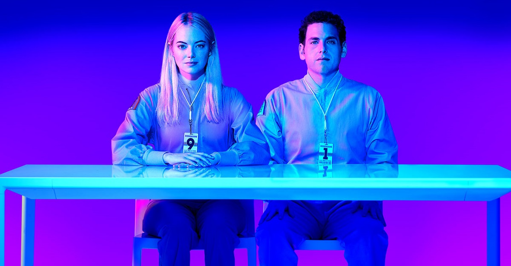
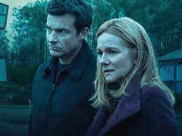

The fall is the perfect season to binge series. The producers know this, and therefore a lot of TV shows are released during the fall. This is our favorites among the new series and seasons released this fall.
Le Bureau (Season 4)
Malotru is back in this fourth season of the highly acclaimed French spy-drama. This time Malotru finds himself in Russia, hiding from the DGSE as a result of his previous actions. This season lives up to the expectations from the previous seasons, and is filled with some of the best spy-drama ever showed on TV.
Maniac

This fall Netflix dropped the American adaption of Espen P.A Lervaags Norwegian show Maniac. Netflix' version is slightly different, and is a dystopian futuristic psychological mindfuck. Jonah Hill and Emma Stone is the lead actors for this 10-episode drama, where both of our main characters is test subjects in an experiment to cure all mental health problems. The show is higly original, and will make you laugh, cry and also confuse you.
I Am A Killer
This disturbing Netflix original interviews prisoners on death row in USA, and let them tell their stories from their point of view. Each episode focuses on a new prisoner. At times you might even feel empathy for some of the prisoners, even though all of them are sentenced for murder. Other prisoners is just utterly scary, and show little sign of remorse. This is a quality documentary, and you should definitely check it out this fall.
Mayans M.C
If you've seen Sons of Anarcy, this is a must see. If you haven't, that does not really matter, you should see this anyways. Mayans M.C is a spin-off from Sons of Anarchy, and focuses of the Mayans motorcycle club that as appeared in Sons of Anarchy several times. Following in the footsteps of SOA is no easy task, but Mayans M.C is definitely a worthy spin-off.
Ozark (Season 2)

Marty Byrde and his family is still trying to lander money for a Mexican drug cartel to save his family from a violent death. This season he has 6 months to build a new casino in Ozark, and is filled with politics, murders, backstabbing and a lot of drama.